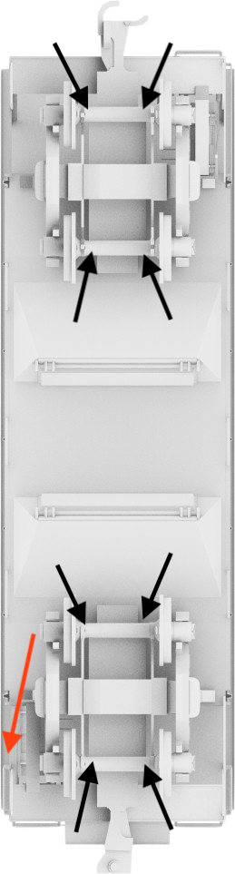

Upload a gateway report (.xlsx or .csv) to analyze it.
Expected schema: row 1 blank, row 2 header, 68 columns beginning with gateway_id.
Everything runs in your browser — no data is uploaded to a server.
Overview
Counts shown as unique / total. Tags:
unique de-duplicated ·
dups duplicates only.
Test information
Gateway heartbeat performance
Boomerang performance
Movement state distribution
Connectivity
Gateway health
Boomerang sensors
Gateway
Wagon — bogie close-up

L1
L2
L3
L4
R1
R2
R3
R4
GW
Map
GPS fix quality
GPS coverage
Connectivity
Overall statistics
RSSI by movement state
Cellular operators (MCC-MNC)
Cell tower statistics
Signal strength distribution
RSSI location extremes
Worst RSSI readings
Best RSSI readings
Top 10 most-used cell towers
GPS & connectivity
GPS fix quality
GPS coverage
Cellular operators (MCC-MNC)
Cell tower statistics
Top 10 most-used cell towers
Timeline — daily breakdown
RSSI
≤-120
-119..-111
-110..-101
-100..-91
≥-90
Battery
<3.50
3.50-3.79
3.80-4.79
≥4.80
Solar
<0.10
0.10-0.29
0.30-0.79
≥0.80